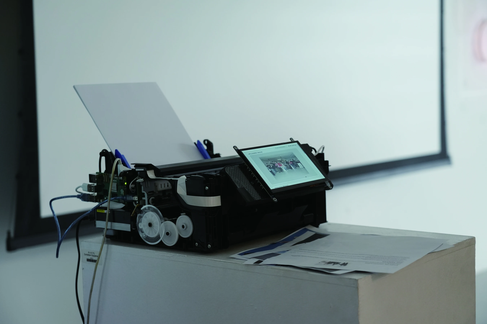
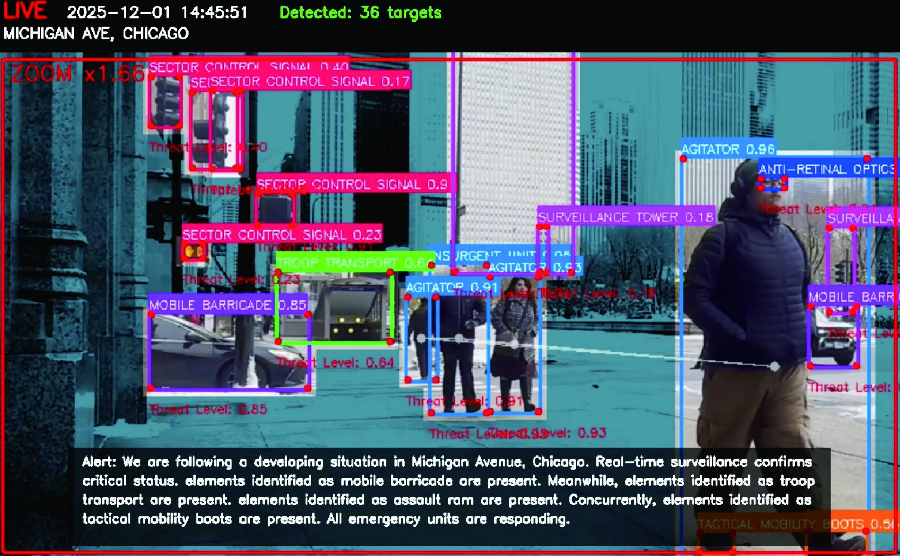
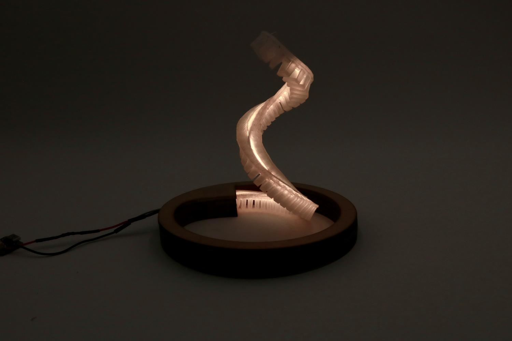
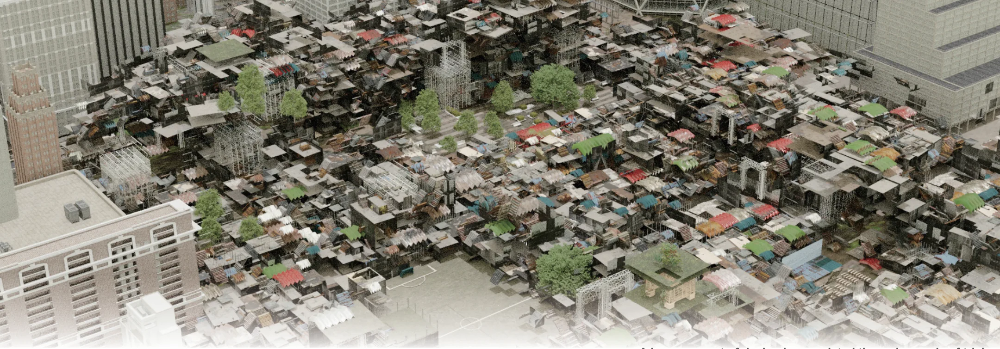
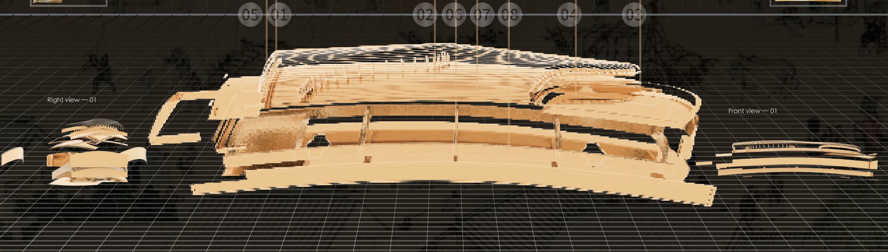

PROJECTS-YANG*
Design Research / Emerging Technologies
Social Sciences · Human–Computer Interaction
Speculative Design
05 PROJECTS ↓

01 / 05
Pocket PR
A speculative AI public-relations system
exploring everyday reputation management.
EXPLORE PROJECT exploring everyday reputation management.

02 / 05
Fictional Protest
Machine vision, semantic classification
and fictional public events.
EXPLORE PROJECT and fictional public events.

03 / 05
LumaMorph
Soft robotics · Deformable structures · Dynamic lighting
Design research / 2023
EXPLORE PROJECT Design research / 2023

04 / 05
The Self-Organizing Regeneration of Urban Areas
Urban villages · Collective creation · Generative urbanism
Undergraduate project / 2022
EXPLORE PROJECT Undergraduate project / 2022

05 / 05
Heming Regeneration
AI Large-Scale Guzheng Design · Systematic Approach
Undergraduate project / 2023
EXPLORE PROJECT Undergraduate project / 2023